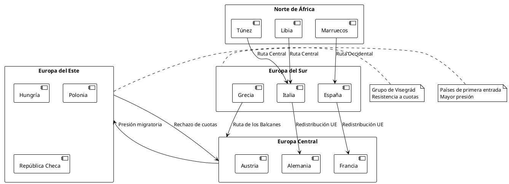
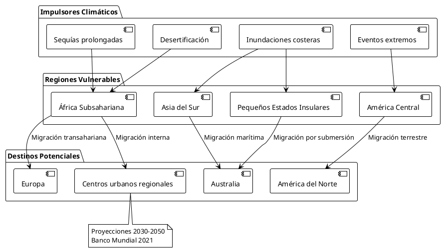
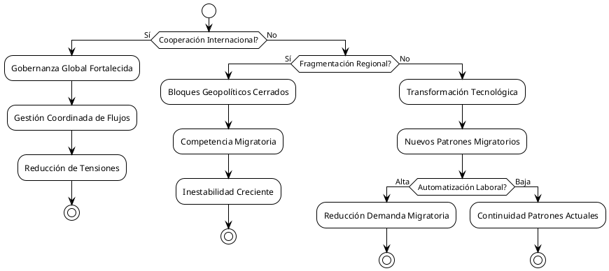

El Impacto de las Migraciones en la Geopolítica, Geoestrategia y el Balance de Poder Global (i)
Introducción General al Fenómeno Migratorio
La migración ha sido una constante histórica en la evolución de las sociedades humanas. Sin embargo, en el siglo XXI, los flujos migratorios han adquirido una complejidad y una centralidad inéditas dentro del análisis geopolítico, económico y estratégico. Factores como el cambio climático, los conflictos armados prolongados, las crisis económicas persistentes, la desigualdad global y la inestabilidad política han multiplicado las causas y los ritmos del desplazamiento humano a escalas nunca vistas desde la Segunda Guerra Mundial.
A diferencia de épocas anteriores, las migraciones contemporáneas no se limitan al tránsito entre países pobres y ricos, sino que involucran a una red global de rutas, actores y motivaciones, generando impactos asimétricos y multidimensionales en los Estados receptores, de tránsito y emisores. Esta complejidad convierte a la migración no solo en un fenómeno social o humanitario, sino en una variable crítica de la seguridad, la diplomacia y el equilibrio de poder internacional.
En este contexto, el primer capítulo analiza cómo estos flujos reconfiguran el mapa geopolítico global, alteran la demografía estratégica de regiones clave y generan nuevas dinámicas de seguridad internacional. Por su parte, el segundo capítulo se adentra en el uso deliberado de la migración como herramienta geoestratégica —la llamada *migración armamentizada*— dentro del marco de las guerras híbridas contemporáneas, revelando cómo el desplazamiento humano puede ser manipulado como vector de presión, desestabilización y conflicto.
Ambos enfoques parten de una premisa común: que comprender el fenómeno migratorio hoy requiere ir más allá de las cifras y los discursos humanitarios. Exige examinar su rol como fuerza estructurante en la política internacional actual, su instrumentalización por parte de diversos actores, y sus implicaciones éticas, jurídicas y de seguridad a largo plazo.
El Impacto de las Migraciones en la Geopolítica, Geoestrategia y el Balance de Poder Global
Las migraciones humanas han sido una constante histórica, pero en el siglo XXI han adquirido dimensiones y características que las convierten en un factor determinante de la geopolítica mundial. Los flujos migratorios contemporáneos no solo responden a factores económicos tradicionales, sino que están siendo moldeados por conflictos armados, cambio climático, persecución política y desigualdades estructurales que trascienden las fronteras nacionales.
Este fenómeno está reconfigurando el balance de poder global de maneras complejas y multidimensionales. Por un lado, las migraciones generan tensiones que pueden desestabilizar regiones enteras; por otro, crean oportunidades económicas y demográficas que algunos Estados aprovechan estratégicamente. La gestión de los flujos migratorios se ha convertido en una herramienta geopolítica fundamental, utilizada tanto para ejercer presión diplomática como para fortalecer alianzas regionales.
Marco Teórico: Migración como Factor Geopolítico
Dimensiones de Análisis
La migración internacional opera en múltiples niveles geopolíticos que requieren un análisis sistemático:
Nivel Sistémico Global
En el nivel más amplio, las migraciones reflejan y amplifican las desigualdades del sistema internacional. Los patrones migratorios Sur-Norte evidencian las brechas de desarrollo que caracterizan el orden mundial contemporáneo. Según datos del Alto Comisionado de las Naciones Unidas para los Refugiados (ACNUR), para 2023 existían más de 100 millones de personas desplazadas forzadamente en el mundo, cifra que representa aproximadamente el 1.3% de la población mundial.
Nivel Regional
Los flujos migratorios regionales crean complejas interdependencias que pueden tanto fortalecer como debilitar los bloques geopolíticos. La crisis migratoria europea de 2015-2016 demostró cómo los movimientos poblacionales pueden poner a prueba los marcos institucionales regionales y generar fracturas políticas duraderas.
Nivel Bilateral
Las relaciones migratorias bilaterales se han convertido en instrumentos de política exterior, donde los Estados utilizan el control de fronteras, los acuerdos de readmisión y las políticas de visado como herramientas de negociación diplomática.
Análisis Crítico: Transformaciones del Poder Global
La Instrumentalización de las Migraciones
Los Estados han desarrollado sofisticadas estrategias para instrumentalizar los flujos migratorios como herramientas geopolíticas. Esta "weaponización" de las migraciones se manifiesta en diversas formas:
Diplomacia Migratoria Coercitiva
Algunos Estados utilizan la amenaza de generar flujos migratorios masivos para presionar a sus vecinos o adversarios geopolíticos. El caso más emblemático es la estrategia empleada por Turquía desde 2016, utilizando su posición como país de tránsito de refugiados sirios para obtener concesiones de la Unión Europea.
Control Fronterizo como Proyección de Poder
La capacidad de controlar fronteras y regular flujos migratorios se ha convertido en una manifestación tangible de soberanía estatal. Estados con mayor capacidad tecnológica y recursos económicos pueden implementar sistemas de control fronterizo más sofisticados, lo que les otorga ventajas geopolíticas significativas.
Impacto en las Alianzas Internacionales
Las migraciones están reconfigurando las alianzas internacionales de maneras imprevistas:
Fragmentación de Bloques Tradicionales
La crisis migratoria europea evidenció profundas divisiones dentro de la Unión Europea, con países como Hungría, Polonia y República Checa desafiando abiertamente las políticas migratorias comunitarias. Esta fragmentación ha debilitado la cohesión europea y ha sido aprovechada por potencias externas para amplificar las divisiones internas.
Nuevas Coaliciones Sur-Sur
Los países del Sur Global están desarrollando nuevos mecanismos de cooperación para gestionar los flujos migratorios regionales, reduciendo su dependencia de los marcos institucionales dominados por potencias occidentales. El Pacto Mundial para la Migración Segura, Ordenada y Regular de 2018 representa un intento de crear nuevas gobernanzas globales más inclusivas.
Casos de Estudio Geopolíticos
Crisis del Mediterráneo y Geopolítica Europea
La crisis migratoria en el Mediterráneo ha transformado las dinámicas geopolíticas europeas de manera fundamental. Entre 2014 y 2023, más de 2 millones de personas han intentado cruzar el Mediterráneo, convirtiéndolo en la frontera migratoria más letal del mundo.

{kind=link}
Este caso ilustra cómo las migraciones pueden generar efectos de dominó geopolíticos. La incapacidad de la UE para desarrollar una respuesta coordinada ha fortalecido los movimientos populistas eurófobos y ha debilitado el proyecto de integración europea.
Migración Centroamericana y Geopolítica de América del Norte
La migración desde el Triángulo Norte de Centroamérica (Guatemala, Honduras, El Salvador) hacia Estados Unidos ha generado complejas dinámicas geopolíticas que trascienden las relaciones bilaterales tradicionales.
| País de Origen | Detenciones en Frontera US | Solicitudes de Asilo | Deportaciones |
|---|---|---|---|
| Guatemala | 847,000 | 156,000 | 234,000 |
| Honduras | 623,000 | 189,000 | 178,000 |
| El Salvador | 445,000 | 134,000 | 156,000 |
| Total | 1,915,000 | 479,000 | 568,000 |
La gestión de estos flujos ha llevado a la creación de nuevos marcos de cooperación regional, como el Plan de Desarrollo Integral para Centroamérica, que busca abordar las causas estructurales de la migración mediante inversiones coordinadas.
Migración Climática y Geopolítica del Futuro
El cambio climático está emergiendo como el principal motor de migraciones futuras, con implicaciones geopolíticas aún no completamente comprendidas. El Banco Mundial estima que para 2050, el cambio climático podría desplazar a más de 200 millones de personas internamente dentro de sus países de origen.

{kind=link}
Impacto en el Balance de Poder Global
Transformaciones Demográficas Estratégicas
Las migraciones están generando transformaciones demográficas que tendrán consecuencias geopolíticas de largo plazo:
Envejecimiento Diferencial
Los países desarrollados enfrentan procesos de envejecimiento poblacional acelerado que requieren inmigración laboral para mantener sus sistemas económicos y de seguridad social. Esta dependencia demográfica crea nuevas formas de interdependencia que pueden ser aprovechadas geopolíticamente por los países emisores de migrantes.
Concentración Urbana Global
Las migraciones, tanto internacionales como internas, están acelerando el proceso de urbanización global. Para 2050, se estima que el 68% de la población mundial vivirá en ciudades, lo que requerirá nuevos marcos de gobernanza que trasciendan las estructuras estatales tradicionales.
Reconfiguración de Capacidades Estatales
Capacidades de Vigilancia y Control
Los Estados están desarrollando nuevas capacidades tecnológicas para gestionar las migraciones, incluyendo sistemas de inteligencia artificial, biometría avanzada y vigilancia satelital. Estas capacidades no solo sirven para el control migratorio, sino que fortalecen las capacidades estatales generales de vigilancia y control social.
Diplomacia Migratoria
La gestión de las migraciones ha creado nuevos espacios de diplomacia internacional. Los foros multilaterales sobre migración, como el Foro Global sobre Migración y Desarrollo, se han convertido en arenas donde los Estados negocian no solo políticas migratorias, sino también otros aspectos de sus relaciones bilaterales y multilaterales.
Análisis Crítico: Limitaciones y Contradicciones
Paradojas de la Gobernanza Migratoria Global
El régimen internacional de migración está caracterizado por múltiples paradojas que limitan su efectividad:
Fragmentación Normativa
A diferencia de otros ámbitos de las relaciones internacionales, la migración carece de un régimen internacional coherente. La coexistencia de múltiples marcos normativos (derecho de refugiados, derecho laboral internacional, derecho de derechos humanos) genera vacíos y contradicciones que son aprovechados por los Estados para evitar responsabilidades.
Securitización vs. Humanización
Existe una tensión fundamental entre los enfoques de seguridad nacional y los enfoques de derechos humanos en la gestión migratoria. Esta tensión se ha intensificado en el contexto post-11 de septiembre, donde las migraciones han sido crecientemente securitizadas.
Límites del Control Migratorio
| Región/País | Inversión en Control Fronterizo (Miles de millones USD) | Flujos Irregulares Estimados | Índice de Efectividad |
|---|---|---|---|
| Estados Unidos | 18.2 | 2.1 millones | 0.73 |
| Unión Europea | 12.8 | 1.8 millones | 0.68 |
| Australia | 2.1 | 65,000 | 0.89 |
| Japón | 1.8 | 45,000 | 0.92 |
| Promedio Global | 8.7 | 1.0 millones | 0.73 |
Los datos evidencian que incluso los sistemas de control fronterizo más sofisticados y costosos tienen limitaciones significativas para detener completamente los flujos migratorios irregulares.
Implicaciones Futuras y Escenarios Prospectivos
Escenario 1: Fragmentación Geopolítica Acelerada
En este escenario, las tensiones generadas por las migraciones contribuyen a una fragmentación acelerada del orden internacional. Los bloques regionales desarrollan sistemas de gestión migratoria incompatibles, generando nuevas formas de competencia geopolítica.
Escenario 2: Cooperación Multilateral Fortalecida
Un escenario alternativo contempla el desarrollo de nuevos mecanismos de cooperación internacional que permitan una gestión más coordinada de las migraciones globales. Esto requeriría superar las limitaciones del sistema westfaliano tradicional.
Escenario 3: Transformación Tecnológica Radical
El desarrollo de nuevas tecnologías (inteligencia artificial, automatización, biotecnología) podría transformar radicalmente tanto los impulsores como los impactos de las migraciones internacionales.

{kind=link}
Conclusiones
Las migraciones internacionales han emergido como uno de los factores más significativos en la reconfiguración del orden geopolítico mundial. Su impacto trasciende las dimensiones tradicionales de la política internacional, creando nuevas formas de interdependencia, conflicto y cooperación que desafían los marcos analíticos convencionales.
Transformaciones Estructurales
Las migraciones están generando transformaciones estructurales en el sistema internacional que incluyen:
- Redefinición de la Soberanía: La capacidad estatal para controlar los flujos poblacionales se ha convertido en una medida fundamental de la soberanía efectiva, generando nuevas formas de competencia entre Estados.
- Nuevas Formas de Poder: La gestión migratoria ha creado nuevas formas de poder blando y duro que los Estados utilizan en sus estrategias geopolíticas.
- Reconfiguración de Alianzas: Las crisis migratorias están reconfigurando las alianzas internacionales, creando nuevas coaliciones y fragmentando bloques tradicionales.
Desafíos para la Gobernanza Global
La gestión de las migraciones internacionales representa uno de los principales desafíos para la gobernanza global del siglo XXI. La ausencia de un régimen internacional coherente y la persistencia de enfoques nacionalistas limitan la capacidad de la comunidad internacional para abordar efectivamente este fenómeno.
Perspectivas de Futuro
El futuro del orden geopolítico mundial será significativamente influenciado por cómo la comunidad internacional logre gestionar los desafíos migratorios. Esto requerirá el desarrollo de nuevos marcos conceptuales, institucionales y normativos que trasciendan las limitaciones del sistema westfaliano tradicional.
La migración no es simplemente un efecto secundario de otros procesos geopolíticos, sino un factor constitutivo fundamental del orden internacional emergente. Su comprensión y gestión efectiva será crucial para determinar si el siglo XXI se caracterizará por la cooperación multilateral o por la fragmentación y el conflicto.
Referencias Documentales
- Alto Comisionado de las Naciones Unidas para los Refugiados (ACNUR). (2023). Tendencias Globales: Desplazamiento Forzado en 2022. Ginebra: ACNUR.
- Banco Mundial. (2021). Groundswell Part 2: Acting on Internal Climate Migration. Washington, D.C.: World Bank Group.
- Organización Internacional para las Migraciones (OIM). (2022). Informe sobre las Migraciones en el Mundo 2022. Ginebra: OIM.
- Castles, Stephen, de Haas, Hein, & Miller, Mark J. (2020). The Age of Migration: International Population Movements in the Modern World (6th ed.). New York: Guilford Press.
- Greenhill, Kelly M. (2010). Weapons of Mass Migration: Forced Displacement, Coercion, and Foreign Policy. Ithaca: Cornell University Press.
- Hollifield, James F., Martin, Philip L., & Orrenius, Pia M. (Eds.). (2022). Controlling Immigration: A Global Perspective (4th ed.). Stanford: Stanford University Press.
- Weiner, Myron. (1995). The Global Migration Crisis: Challenge to States and to Human Rights. New York: HarperCollins.
- Zolberg, Aristide R. (2006). A Nation by Design: Immigration Policy in the Fashioning of America. Cambridge: Harvard University Press.
- Comisión Europea. (2023). Progress Report on the European Migration Agenda. Bruselas: Comisión Europea.
- Instituto de Política Migratoria (MPI). (2023). Global Migration Data Portal: International Migration Statistics. Washington, D.C.: MPI.